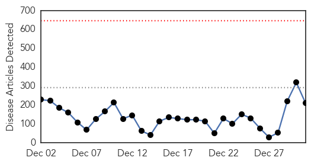
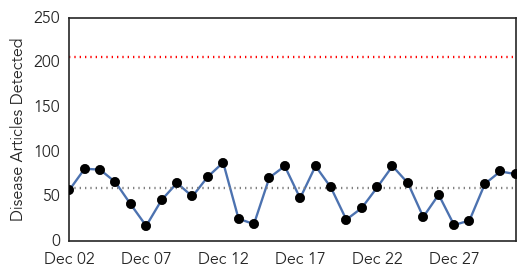

Ebola
30-Day Web Trend
0 alerts, 0 warnings

30-Day Twitter Trend
0 alerts, 0 warnings
Article Locations

Article Confidences

Top Articles:
- 1.000
- Dozens Of New Cases Emerge Near Sierra Leone Border, Authorities Confirm
- 1.000
- Ebola spreads in Sierra Leone as global cases top 20,000
- 1.000
- Experts: It was a busy, black-eye year for disease control
- 1.000
- Ebola: Q&A What you need to know
- 1.000
- Patient being tested for Ebola in Kelowna not believed to be a risk
- 1.000
- Risk of disease spreading 'very low'
- 1.000
- Ebola in the UK: Risk of catching virus remains 'very low', say health officials
- 1.000
- Ebola in the UK: Infected nurse Pauline Cafferkey treated with survivors' blood plasma and experimental drugs
- 1.000
- Despite best efforts, Ebola still a danger
- 1.000
- Ebola spreads in Sierra Leone as deaths rise above 7,900
- 1.000
- Ebola epidemic was an 'avoidable crisis'
- 1.000
- Ebola pace shows little let-up in Sierra Leone
- 1.000
- Final Ebola test negative
- 1.000
- First Case of Ebola in UK: Scotland Confirms Nurse Positive for Virus
- 1.000
- Ebola crisis: British patient Pauline Cafferkey being treated with survivor's blood plasma
- 1.000
- Ebola spreads in Sierra Leone as global cases top 20,000 - WHO
- 1.000
- Health care worker being tested for Ebola virus in B.C.
- 1.000
- Fighting a Deadly Virus
- 1.000
- UPDATE 1-Ebola spreads in Sierra Leone as global cases top 20,000 - WHO
- 0.999
- "Robust plans" in place for any Ebola outbreak in Wales, authorities say
- 0.999
- Nurse who caught Ebola in Africa taken to London
- 0.999
- The world must prepare to handle Ebola crisis this year — Bloomberg Editors
- 0.999
- Kenya : Ebola preys on poor healthcare
- 0.999
- Now that Ebola is in Britain, the realities of the disease are finally hitting home
- 0.999
- Top UK doctor: Ebola screening should be improved
- 0.999
- Ebola devastates West Africa, horrifies world in 2014
- 0.999
- Bats may be possible source of Ebola in West Africa
- 0.999
- 39-year-old nurse becomes the first person to be diagnosed with Ebola in Britain : World, News
- 0.998
- Ebola virus disease – United Kingdom
- 0.998
- The world must prepare to deal with next year’s global pandemic
- 0.998
- Latest Ebola News: Scottish health worker with Ebola isolated at London hospital
- 0.998
- Ebola-hit nurse transferred to London hospital
- 0.998
- London at Lower Risk
- 0.998
- Experimental drug for Ebola patient Pauline Cafferkey
- 0.998
- Experimental drug for Ebola patient Pauline Cafferkey
- 0.998
- UPDATE: Ebola tests on patient in Kelowna 'negative'
- 0.998
- Ebola patient in Britain transferred to London
- 0.998
- Ebola in Dallas: Your End of the Year Update
- 0.997
- Nurse is Britain’s first Ebola victim
- 0.997
- Nurse from interior tests negative for Ebola... again.
- 0.997
- 6 Nastiest Illnesses of 2014
- 0.996
- British Ebola nurse was checked seven times for virus
- 0.996
- Ebola: Why wasn’t Pauline Cafferkey quarantined?
- 0.996
- B.C. nurse’s second Ebola test comes back negative
- 0.995
- Screening for Ebola in the UK is being reviewed after infected nurse got through Heathrow
- 0.995
- Ebola nurse cleared to fly by Heathrow, screening procedure slammed — RT UK
- 0.995
- Leadletter: Ignore hysterical reaction to Ebola
- 0.994
- Scottish nurse with Ebola transferred to London
- 0.994
- Ebola: UK screening procedures to be reviewed
- 0.994
- Ebola: UK screening procedures to be reviewed
Showing top 50 articles...
Top Tweets:
- 0.991
- Lassa Fever another Virus Plaguing West Africa http://t.co/13RxEjYtMU üíâüíäüî¨üè• Vaccine Ebola vaccines = goals 4 a HappyNewYear
- 0.947
- RT: WHO: Sierra Leone still faring worst of Ebola countries; 337 cases last week > double Liberia and Guinea's combined ht…
- 0.947
- RT: WHO: Sierra Leone still faring worst of Ebola countries; 337 cases last week > double Liberia and Guinea's combined ht…
- 0.837
- RT: The Path of the Ebola Virus Outbreak | The New York Times: http://t.co/2peYbfrXiK
- 0.832
- Kono District: Newest Ebola hotspot in Sierra Leone http://t.co/CnPuV6LAOD
- 0.828
- Ebola Ravages Economies in West Africa http://t.co/2OkVanDKJS
- 0.788
- Source of Ebola Outbreak Might Be Bats, Study Says http://t.co/fsM6Nh2sio
- 0.766
- RT: Dr. Mosoka Fallah: Transmission of Ebola through hand laying by religious leaders @ worship centers & health centers htt…
- 0.765
- Ebola crisis numbers as of December 30th 2014. endebolanow EbolaMustGo WeCanFightThis westafrica ebola http://t.co/Z4dk6oC5Wu
- 0.759
- Malaria killing thousands more than Ebola in West Africa http://t.co/y8KqwRs92b
- 0.649
- Screening process for Ebola under review after nurse with virus travels through Heathrow http://t.co/aO6772YPUi
- 0.648
- Health worker with Ebola transferred to London hospital http://t.co/gElQV6gfkE
- 0.592
- New clues to where the Ebola epidemic started http://t.co/n3g9pqCKSs
- 0.587
- MT: Liberian authorities temporarily lift a curfew imposed to stop the spread of Ebola, to allow churchgoers to celebrate NYE
- 0.569
- Investigations yield insights into Ebola outbreak' early months http://t.co/AHdocjnVNk
- 0.555
- Ebola patient moved from Scotland to London as 2 more possible cases are tested http://t.co/N1fWZMLELn
- 0.547
- Ebola continues to spread in Sierra Leone as global cases top 20,000 via http://t.co/td5LNweSaD TackleEbola http://t.co/tJR7GdUYbH
- 0.535
- BBC Sierra Leone correspondent describes the stresses of reporting Ebola http://t.co/5tmaMa8eYL
Unknown
30-Day Web Trend
0 alerts, 0 warnings

30-Day Twitter Trend
0 alerts, 0 warnings

Article Locations

Article Confidences

Top Articles:
- 0.999
- 2 Tri-State children among flu deaths as cases soar
- 0.998
- Jaundice spreads to Kendrapara, Keonjhar in Odisha
- 0.997
- Spike in flu cases reported across Iowa
- 0.992
- Health Officials: 9 Oklahomans die of the flu, hundreds hospitalized
- 0.987
- Flu season shaping up to be brutal
- 0.983
- 22 affected by jaundice in Kendrapara
- 0.980
- 15,000 chickens culled amid bird flu alert
- 0.977
- Give yourself the gift of flu protection after the holidays
- 0.975
- Watching out for flu
- 0.972
- Hong Kong culls 15,000 chickens amid bird flu alert
- 0.961
- H7N9 case sparks chicken culling - Regional
- 0.946
- Hong Kong Culls 15,000 Chickens, 6 People Infected In China
- 0.929
- If you had chickenpox as a kid, watch out for shingles
- 0.928
- Another Tri-State hospital restricts visitors due to flu
- 0.927
- Hong Kong Culls 19,000 Chickens amid Bird Flu Alert — Naharnet
- 0.926
- Hong Kong culls 19,000 birds amid avian flu alert
- 0.917
- Chicago Tribune
- 0.917
- Chicago Tribune
- 0.917
- Chicago Tribune
- 0.917
- Chicago Tribune
- 0.917
- Chicago Tribune
- 0.917
- Chicago Tribune
- 0.917
- Chicago Tribune
- 0.917
- Chicago Tribune
- 0.917
- Chicago Tribune
- 0.917
- Chicago Tribune
- 0.917
- Chicago Tribune
- 0.917
- Chicago Tribune
- 0.917
- Chicago Tribune
- 0.917
- Chicago Tribune
- 0.917
- Chicago Tribune
- 0.917
- Chicago Tribune
- 0.917
- Chicago Tribune
- 0.917
- Chicago Tribune
- 0.911
- PEDv spreads in Hawaii
- 0.900
- Hong Kong reports imported human rabies death, 1st case in 13 years
- 0.866
- Palestinians to deliver newly signed treaty instruments to UN on Wednesday
- 0.866
- U.S.-led forces launch 10 air strikes in Syria, Iraq
- 0.866
- Gambia President Jammeh arrives back in capital -official sources
- 0.855
- South Korea to disinfect farms as foot-and-mouth, bird flu spread, Others news, Health News, AsiaOne YourHealth
- 0.850
- South Korea to disinfect farms as foot-and-mouth, bird flu spread
- 0.822
- Hong Kong culls 19,000 birds amid H7N9 flu alert
- 0.822
- Avian flu virus spreading in Asia
- 0.819
- Belarus suspends pork imports from Russia's Oryol Oblast
- 0.778
- Kaiser Permanente Hospital Patient Diagnosed With Tuberculosis In Riverside « CBS Los Angeles
- 0.745
- Outbreak of listeria tied to caramel apples grows to at least 32
- 0.721
- Hasbro doctor answers enterovirus questions
- 0.702
- Zille reshuffles her Cabinet
- 0.696
- Officials: Flu widespread across Rhode Island
- 0.685
- Sex and art scandals: Have the French gone soft?
Showing top 50 articles...
Top Tweets:
- 0.815
- Is the stomach flu really the flu? No, flu is a contagious respiratory illness. Learn more: http://t.co/Xh7enl1Qoe
- 0.732
- Clínicas garantiza Servicios de Urgencias en fin de año: El Hospital de Clínicas de la Facultad de Ciencias Mé... http://t.co/Q6ZwR0rszx
- 0.706
- Niño de 2 años mata accidentalmente de un tiro a una mujer en EEUU: Un niño de dos años mató este martes a u... http://t.co/xVvHj4EnnY
- 0.554
- how about a Scrubs themed virus? Dr, Cox-ackie Virus! Wait that doesn't work ...